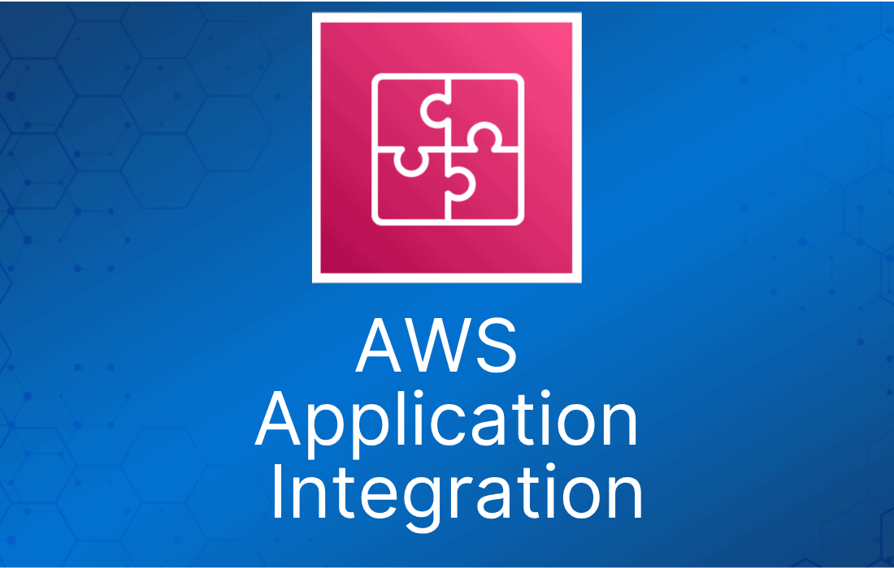
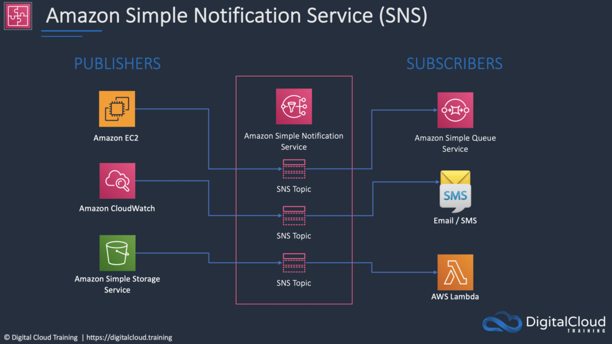

AWS 应用集成服务是一组服务，用于实现应用之间的解耦通信。
这些服务为微服务、分布式系统和 serverless 应用提供解耦能力。
借助 AWS 应用集成服务，你可以连接各个应用，而无需编写自定义代码来实现互操作。
解耦的应用可以互相协作，同时又能容忍任何单个组件的故障或过载。
与应用集成相关的服务如下：
| 服务 | 作用 | 典型使用场景 |
| Simple Queue Service (SQS) | 消息队列；存储转发模式 | 构建分布式 / 解耦应用 |
| Simple Notification Service (SNS) | 在云端搭建、运营并发送通知 | CloudWatch 告警触发时发送邮件通知 |
| Step Functions | 开箱即用地通过可视化工作流协调 AWS 服务组件 | 订单处理工作流 |
| Simple Workflow Service (SWF) | 需要支持外部流程或专门的执行逻辑 | 有人工参与的工作流，如订单履约系统或流程化审批请求 |
| Amazon MQ | 面向 Apache Active MQ 和 RabbitMQ 的消息代理服务 | 需要支持行业标准 API 和协议的消息队列；将队列迁移到 AWS |
Amazon Simple Notification Service
Amazon Simple Notification Service（Amazon SNS）是一项 Web 服务，让你可以轻松地在云端搭建、运营并发送通知。
Amazon SNS 用于构建和集成松耦合的分布式应用。
SNS 提供即时的推送式投递（无需轮询）。
SNS 的核心概念：
- Topic —— 用来标记和分组你要发送消息的不同 endpoint。
- Subscription —— topic 发送消息的目标 endpoint。
- Publisher —— 向 SNS 提供待发送消息的人 / 告警 / 事件。

SNS 的用法：
- 发送自动或手动通知。
- 向 email、手机（SMS）、SQS 和 HTTP endpoint 发送通知。
- 与 CloudWatch 等其他 AWS 服务紧密集成，让你 AWS 账户中的告警、事件和操作都可以触发通知。
API 简单，易于与应用集成。
通过多种传输协议提供灵活的消息投递。
采用低廉的按使用量付费模式，无前期费用。
基于 Web 的 AWS Management Console 提供简单的点击式界面。
数据类型为 JSON。
SNS 支持广泛的需求，包括事件通知、应用监控、工作流系统、时效性强的信息更新、移动应用，以及任何产生或消费通知的应用。
SNS Subscriber 类型：
- HTTP。
- HTTPS。
- Email。
- Email-JSON。
- SQS。
- Application。
- Lambda。
SNS 支持通过多种传输协议发送通知：
- HTTP/HTTPS —— subscriber 在注册订阅时指定一个 URL。
- Email/Email-JSON —— 消息以邮件形式发送到注册的地址（纯文本或 JSON 对象）。
- SQS —— 用户可以指定一个 SQS 标准队列作为 endpoint。
- SMS —— 消息以短信形式发送到注册的手机号。
Topic 名称最长 256 个字符。
SNS 支持对经过身份验证的调用进行 CloudTrail 审计。
SNS 为接收到的所有消息提供持久化存储（跨多个 AZ）。
Amazon Simple Queue Service（Amazon SQS）
Amazon Simple Queue Service（SQS）是一个分布式队列系统。
Amazon SQS 让你可以在软件组件之间发送、存储和接收消息。
Amazon SQS 队列是等待处理的消息的临时存储库。
SQS 队列在生产并保存数据的组件与接收数据进行处理的组件之间充当缓冲区。

这就是所谓的解耦 / 松耦合，有助于为应用实现弹性。
Amazon SQS 是拉取（pull）模式的，而不是推送（push）模式（Amazon SNS 是推送模式）。
Amazon Simple Workflow Service（Amazon SWF）
Amazon Simple Workflow Service（SWF）是一项 Web 服务，让你可以轻松协调跨分布式应用组件的工作。
Amazon SWF 用于处理包含并行或串行步骤的后台任务。
你可以把 Amazon SWF 看作一个全托管的状态跟踪器和任务协调器。
如果应用的步骤需要超过 500 毫秒才能完成、需要跟踪处理状态，或者任务失败时需要恢复或重试，就适合使用 Amazon SWF。
使用 SWF，你可以以工作流的形式构建分布式异步系统。
它会跟踪工作流状态，你可以通过 API 进行交互和更新。
最适合有人工参与的工作流，如订单履约系统或流程化审批请求。
AWS 建议新应用优先考虑使用 AWS Step Functions 而不是 SWF。
Amazon MQ
Amazon MQ 是面向 ActiveMQ 的托管消息代理服务。
Amazon MQ 支持行业标准 API 和协议，因此你可以在不重写代码的情况下迁移消息系统和应用。
Amazon MQ 提供经济高效且灵活的消息处理能力。
Amazon MQ 负责 ActiveMQ broker 的管理和维护，并自动预配置高可用基础设施。
AWS Step Functions
AWS Step Functions 可以将分布式应用的各个组件协调为可视化工作流中的一系列步骤。
你可以快速构建并运行状态机，以可靠、可扩展的方式执行应用的各个步骤。
工作方式：
- 用基于 JSON 的 Amazon States Language 定义工作流的各个步骤。可视化控制台会自动按执行顺序绘制每个步骤。
- 启动一次执行，可视化并验证应用的各个步骤是否按预期运行。控制台会高亮显示每个步骤的实时状态，并提供每次执行的详细历史记录。
- AWS Step Functions 为你运行并扩展应用的各个步骤及底层计算资源，确保应用在需求增长时仍能可靠执行。
它是一个托管的工作流和编排平台。